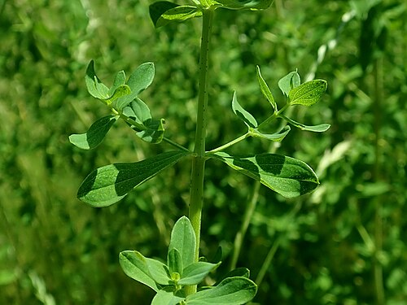
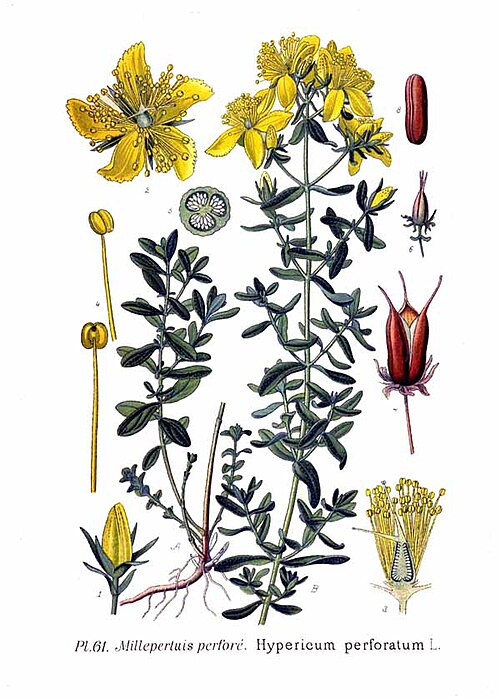

Dziurawiec zwyczajny
Hypericum perforatum · rodzina dziurawcowate (Hypericaceae) · „świętojańskie ziele"



Występowanie
Cała Polska, suche łąki
Wysokość
30–80 cm
Kwitnienie
VI – VIII (Św. Jan = 24.06)
Zbiór
VII (pełnia kwitnienia)
Surowiec
Ziele kwitnące (szczyty)
Kolor naparu
Czerwonawy
Opis i występowanie
Bylina dorastająca do 80 cm. Łodyga okrągła z 2 podłużnymi listewkami, naga, w górze rozgałęziona. Liście jajowate, naprzeciwległe, z charakterystycznymi przeźroczystymi kropkami widocznymi pod światło — to zbiorniki olejku eterycznego, stąd nazwa „dziurawiec" (jakby liście były podziurawione).
Kwiaty żółte, 5-płatkowe, z licznymi pręcikami, zebrane w baldachogrony. Na płatkach widać czarne kropki = hiperycyna (czerwony barwnik aktywny leczniczo). Po roztarciu kwiatu w palcach skóra zabarwia się na krwawoczerwono — kolejny znak rozpoznawczy.
Rośnie na suchych łąkach, miedzach, polanach leśnych, przydrożach. Lubi gleby ubogie, słoneczne stanowiska.
Skład
| Składnik | Działanie |
|---|---|
| Hiperycyna, pseudohiperycyna | Antydepresyjne, antywirusowe |
| Hyperforyna | Antydepresyjne (wpływ na serotoninę, noradrenalinę, GABA) |
| Flawonoidy (hiperozyd, rutyna, kwercetyna) | Przeciwzapalne, wzmacnianie naczyń |
| Olejek eteryczny | Antyseptyczne |
| Garbniki (~10%) | Ściągające |
| Procyjanidyny | Antyoksydanty |
Na co pomaga
- Łagodna i umiarkowana depresja — flagowe zastosowanie. Skuteczność porównywalna do SSRI w badaniach klinicznych (Cochrane Review).
- Stany lękowe, niepokój, dystymia — szczególnie sezonowe (SAD — zaburzenia afektywne sezonowe).
- Zaburzenia snu związane z napięciem nerwowym.
- Wątroba, woreczek — wspomaga regenerację, żółciopędne.
- Trudno gojące się rany, oparzenia I-II stopnia — olej dziurawcowy (czerwony!).
- Nerwobóle, rwa kulszowa — wcierki z oleju.
- Niestrawność na tle nerwowym.
- Moczenie nocne u dzieci — łagodne ziele uspokajające.
Zbiór i suszenie
- Kiedy: tradycyjnie w okolicy 24 czerwca (św. Jana) — stąd „świętojańskie ziele". W praktyce: cały lipiec, pełnia kwitnienia.
- Jak: ścinaj górne 20-25 cm pędu wraz z liśćmi i kwiatami, ostrym sekatorem.
- Suszenie: w cieniu, w przewiewnym miejscu, w pęczkach związanych łodygami. Max 35°C — wyższa temperatura niszczy hiperycynę.
- Przechowywanie: w ciemnych słoikach, max 12 mies. Światło degraduje aktywne składniki.
Przepisy
🍵 Napar (kuracja antydepresyjna)
- Łyżkę ziela zalej szklanką wrzątku.
- Przykryj, parzy 15-20 min.
- Pij 2× dziennie po posiłku (rano i wieczorem). Kuracja min. 4-6 tygodni — efekt narasta stopniowo.
💡 Mieszanka antydepresyjna: dziurawiec + melisa + szyszki chmielu (1:1:0,5). Działa silniej i synergicznie.
🌹 Olej dziurawcowy (czerwony!) — na rany i nerwobóle
- Świeże, lekko zwiędnięte (kilkugodzinne!) kwiaty włóż do słoika.
- Zalej olejem słonecznikowym, oliwą lub winogronowym tak, by je przykrył.
- Postaw na słonecznym parapecie na 4-6 tygodni. Codziennie potrząsaj.
- Olej zabarwi się na piękny rubinowoczerwony kolor — to hiperycyna.
- Przecedź, przelej do butelki z ciemnego szkła.
- Smaruj bolące miejsca, rany, oparzenia. Wlewaj kroplę na bolący ząb.
🍶 Nalewka dziurawcowa
- Susz włóż do słoika, zalej alkoholem.
- Maceruj 4 tygodnie w ciemnym miejscu.
- Przecedź, przelej do butelek.
- 20-30 kropli z wodą 2× dziennie. Na nastrój, trawienie, sen.
🌿 Mieszanka „dobry nastrój"
- Wymieszaj: dziurawiec, melisa, lawenda, szyszki chmielu (po 1 części).
- 1 łyżkę zalewaj szklanką wrzątku, parzy 15 min.
- Pij wieczorem przed snem.
✓ Zalety
- Najlepiej zbadane zioło antydepresyjne w Europie
- Skuteczność porównywalna do leków SSRI w łagodnej depresji
- Olej dziurawcowy — wszechstronne zewnętrzne zastosowanie
- Działanie na wątrobę i trawienie
- Naturalny, łatwy do zrobienia
- Dostępny powszechnie (apteka, łąka)
✗ Wady i przeciwwskazania ⚠ POWAŻNE
- ⚠ FOTOUCZULENIE — unikaj słońca i solarium, zwłaszcza osoby jasnoskóre. Może powodować oparzenia!
- ⚠ INTERAKCJE Z LEKAMI — najwięcej znanych interakcji ze wszystkich ziół:
- Antykoncepcja hormonalna — osłabia działanie!
- Leki przeciwdepresyjne (SSRI, MAO) — ryzyko zespołu serotoninowego
- Warfaryna, leki przeciwzakrzepowe
- Cyklosporyna (po przeszczepach!)
- Digoksyna, statyny, leki na HIV, chemioterapeutyki
- Ciąża i karmienie — nie stosować
- ChAD (choroba afektywna dwubiegunowa) — może wywołać manię
- Działanie narasta po 3-4 tyg, nie pomaga „od razu"
- Długie stosowanie → niedobory żelaza
⚠ KONIECZNA KONSULTACJA Z LEKARZEM przed włączeniem dziurawca, jeśli przyjmujesz JAKIEKOLWIEK leki. To zioło ma realne, silne działanie farmakologiczne — nie jest „niewinną herbatką".
Ciekawostki
- W Niemczech dziurawiec jest zarejestrowanym lekiem antydepresyjnym (Jarsin, Neuroplant) — częściej przepisywany niż Prozac.
- Łacińskie hypericum = „nad obrazem" — w średniowieczu wieszano go nad ikonami świętych dla ochrony przed demonami.
- W noc świętojańską (24 czerwca) zbierano dziurawiec dla magicznych właściwości — chronił przed czarami, „odpędzał diabła".
- Olej dziurawcowy ma piękny rubinowy kolor — dawniej dorobiono w niej zioło na rany dla rycerzy (legenda).
- Dla zwierząt jasno-skórych (krowy, owce, konie) zjedzenie dużej ilości dziurawca na słońcu = ciężkie oparzenia skóry — choroba „hyperycyzm".